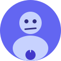
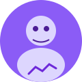
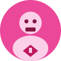
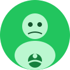

Dr. Sage Insight
Research Wizard
Turns user interviews into actionable insights faster than stakeholders can say "but what did the data say?"
A cross-functional squad of design heroes who turn chaos into clarity — one prototype, workshop, and perfectly timed coffee break at a time.
Five specialists. One mission. Zero tolerance for confusing dropdown menus.

Research Wizard
Turns user interviews into actionable insights faster than stakeholders can say "but what did the data say?"

Journey Mapping Ninja
Maps user journeys so clearly that even the most complex workflows look like a walk in the park.

Design System Guardian
Protects design tokens like they're the Infinity Stones. Spacing inconsistencies don't stand a chance.

Accessibility Hero
Champions inclusive design and makes sure every user — regardless of ability — can navigate with confidence.
Stakeholder Whisperer
Translates "can we make the logo bigger?" into productive design conversations. Miracles included.
We believe great UX isn't magic — it's research, iteration, and the courage to delete that extra form field. The UX Avengers exist to make digital healthcare experiences clearer, kinder, and a little less frustrating for everyone involved.